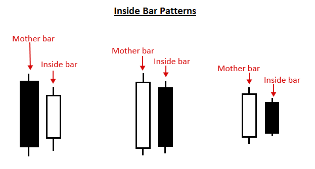
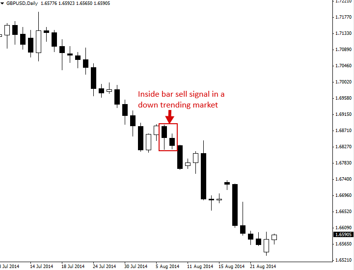
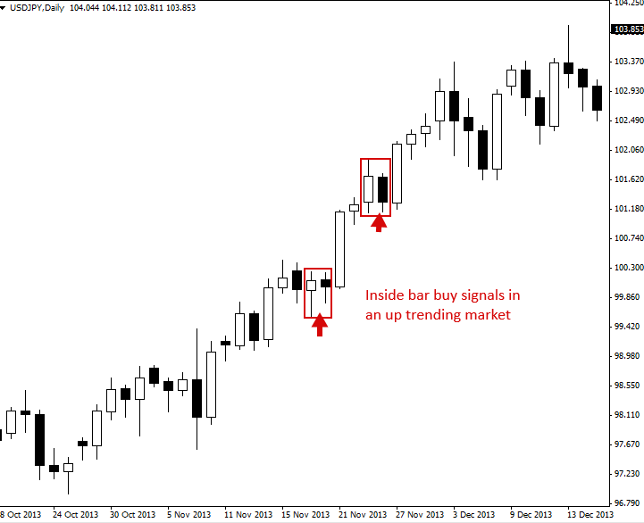
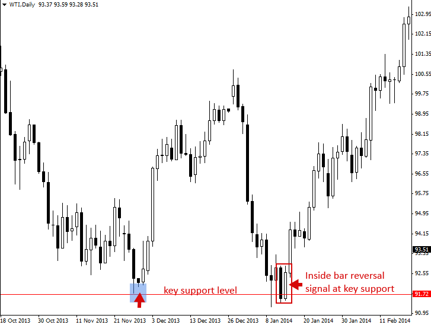
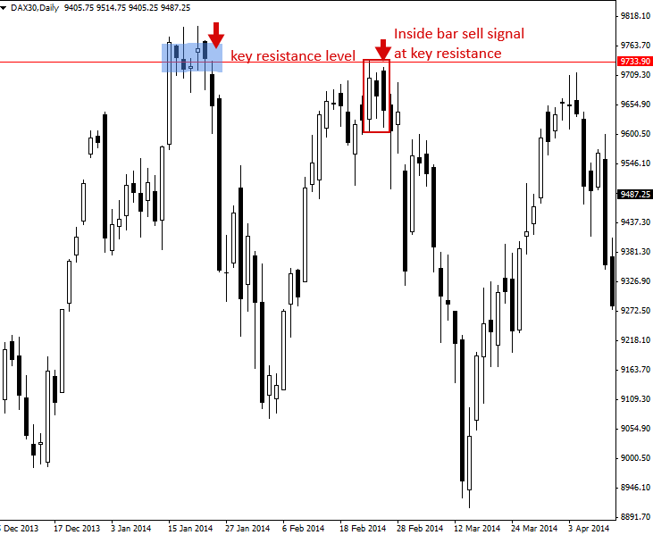

Inside Bar Trading Strategy
인사이드 바 패턴(브레이크 아웃 또는 반전 패턴)
"내부 바" 패턴은 두 개의 봉으로 구성된 Price Action 거래 전략으로, 내부 바가 이전 봉의 고가-저가 범위 내에 있고 크기가 더 작은 경우를 말합니다. 즉, 고가는 이전 봉의 고가보다 낮고, 저점은 이전 봉의 저점보다 높습니다. 내부 바의 상대적 위치는 이전 봉의 상단, 중간 또는 하단일 수 있습니다.
이전 막대, 즉 안쪽 막대 앞에 있는 막대를 종종 "마더 막대"라고 합니다. 안쪽 막대를 "ib"라고 하고, 그 모체 막대를 "mb"라고 하는 경우도 있습니다.
일부 트레이더들은 인사이드 바를 좀 더 관대한 방식으로 정의하는데, 인사이드 바의 고가와 모체 바의 고가가 같거나 두 바의 저가가 같은 경우를 말합니다. 하지만 두 바의 고가와 저점이 같은 경우, 대부분의 트레이더는 이를 인사이드 바라고 여기지 않습니다.
내부 막대는 시장의 횡보 기간을 나타냅니다. 일봉 차트의 내부 막대는 1시간 또는 30분 차트에서 '삼각형'처럼 보입니다. 이러한 막대는 시장의 강한 움직임 이후에 형성되는 경우가 많으며, 다음 움직임을 시작하기 전에 잠시 횡보하는 역할을 합니다. 하지만 시장의 전환점에서 형성되어 주요 지지선이나 저항선 에서 반전 신호로 작용할 수도 있습니다.

인사이드 바를 활용한 거래 방법
인사이드 바는 추세 시장에서 추세 방향으로 거래될 수 있으며, 이런 식으로 거래될 때 일반적으로 '브레이크아웃 플레이' 또는 인사이드 바 가격 액션 브레이크아웃 패턴이라고 합니다. 또한 일반적으로 주요 차트 수준에서 반대 추세로 거래될 수도 있으며, 이런 식으로 거래될 때 종종 인사이드 바 반전 이라고 합니다.
인사이드 바 신호에 대한 고전적인 진입 방법은 모체 바의 고점이나 저점에 매수 정지 주문이나 매도 정지 주문을 넣은 다음, 가격이 모체 바 위나 아래로 돌파하면 진입 주문이 체결되는 것입니다.
넣은 다음, 가격이 모체 바 위나 아래로 돌파하면 진입 주문이 체결되는 것입니다. 매수 정지 주문이나 매도 정지 주문을 내부 바 신호에 대한 고전적인 진입 방법은 모체 바의 고점이나 저점에
손실 정지 위치는 일반적으로 모체 막대의 반대쪽 끝에 위치하거나 모체 막대의 중간 지점(50% 수준) 근처에 위치할 수 있습니다. 이는 모체 막대가 평균보다 큰 경우에 일반적으로 발생합니다.
이것들은 내부 바 설정에 대한 '고전적' 또는 표준 진입 및 손실 정지 배치라는 점에 유의해야 합니다. 결국, 경험이 풍부한 거래자는 적합하다고 생각되는 다른 진입 또는 손실 정지 배치를 결정할 수 있습니다.
인사이드 바 전략을 활용한 거래의 몇 가지 예를 살펴보겠습니다.
추세 시장에서 인사이드 바 거래
아래 예시에서 추세 시장과 일맥상통하는 인사이드 바 패턴을 매매하는 모습을 확인할 수 있습니다. 이 경우, 하락 추세 시장이었으므로 인사이드 바 패턴을 '인사이드 바 매도 신호'라고 합니다.

추세가 있는 시장에서 인사이드 바를 매매하는 또 다른 예시를 보여드리겠습니다. 이 경우, 시장은 상승 추세를 보였으므로 인사이드 바를 '인사이드 바 매수 신호'라고 합니다. 아래 예시와 같이 강한 추세에서는 종종 여러 개의 인사이드 바 패턴이 형성되어 추세 진입 가능성이 높은 여러 개의 진입 지점을 제공합니다.

주요 차트 수준에서 추세에 반하는 인사이드 바 거래
아래 예시에서는 주요 일간 차트 추세에 반하는 인사이드 바 패턴을 트레이딩하는 것을 살펴보겠습니다. 테스트하기 위해 하락 후 이 경우, 가격은 주요 지지선을 해당 지지선에서 핀바 반전을 형성한 후 인사이드 바 반전을 보였습니다. 이 인사이드 바 패턴 이후 강력한 상승세가 전개된 것을 주목하십시오.

다음은 최근 추세/모멘텀과 주요 차트 수준에서 인사이드 바를 트레이딩하는 또 다른 예시입니다. 이 경우, 주요 저항선에서 인사이드 바 반전 신호를 트레이딩했습니다. 또한, 아래 예시에서 인사이드 바 매도 신호는 실제로 동일한 모봉 내에 두 개의 바가 존재했다는 점에 유의하세요. 이는 전혀 문제가 없으며 차트에서 종종 볼 수 있는 현상입니다.
주요 지지 또는 저항 수준에서 막대 내부에서 거래하는 것은 아래 차트에서 볼 수 있듯이 종종 반대 방향으로 큰 움직임으로 이어지기 때문에 매우 수익성이 높을 수 있습니다.

인사이드 바 패턴 거래에 대한 팁
- 초보 트레이더에게는 주요 일간 차트 추세에 맞춰, 즉 '추세에 맞춰' 내부봉을 거래하는 방법을 배우는 것이 가장 쉽습니다. 주요 가격대의 내부봉을 반전 전략으로 활용하는 것은 다소 까다롭고, 능숙해지려면 더 많은 시간과 경험이 필요합니다.
- 인사이드 바는 일간 차트 시간대에서 가장 효과적입니다. 그 이유는 낮은 시간대에는 내부 막대가 너무 많고 그 중 많은 막대가 의미가 없으며 잘못된 돌파 로 이어지기 때문입니다 .
- 인사이드 바는 모체 봉 범위 내에 여러 개의 내부 봉을 포함할 수 있으며, 때로는 동일한 모체 봉 구조 내에 2개, 3개, 심지어 4개의 내부 봉이 나타나는 경우도 있습니다. 이는 단순히 장기간의 횡보를 의미하며, 이는 종종 더 강한 돌파로 이어집니다. '코일링' 내부 봉이 나타날 수도 있는데, 이는 동일한 모체 봉 구조 내에 2개 이상의 내부 봉이 있는 경우이며, 각 내부 봉은 이전 봉보다 작고 이전 봉의 고점에서 저점 범위 내에 있습니다.
- 실제 거래를 시도하기 전에 차트에서 내부 봉을 식별하는 연습을 하세요. 첫 번째 내부 봉 거래는 일간 차트에서 추세 시장에서 이루어져야 합니다.
- 인사이드 바는 때때로 핀 막대 패턴을 (내부 막대 거짓 브레이크 패턴) 의 일부이므로 따라 형성되며 또한 가짜 패턴 이해하는 것이 중요한 Price Action 패턴입니다.
- 인사이드 바는 일반적으로 좋은 위험 보상 비율을 제공하는데, 이는 종종 좁은 손절매 위치를 제공하고 가격이 패턴에서 상승 또는 하락할 때 강력한 돌파로 이어지기 때문입니다.
https://priceaction.com/price-action-university/strategies/inside-bar/